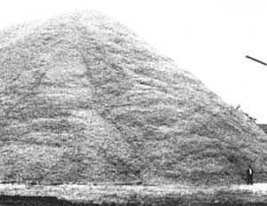

Kilowatts From Cornobs
March/April 1983
An old technology, spruced up with practical American ingenuity, just might let us
generate ...
All of us are aware - when we top off our gas tanks or pay the power and heat billsthat the cost of surviving in modern society is taxing our incomes to a greater extent than ever before. And since these energy costs, themselves, reflect - to some extent, at least - the economic hardships placed upon the suppliers of those commodities, the expenses are ultimately distributed so that everyone (manufacturers, food producers, and consumers alike) is affected, in a vicious circle of circumstance.
Cut-and-dried solutions to such a complicated problem can't be expected, of course ... but one option-increased decentralization of power generation-offers some real advantages to folks who are willing to work with alternatives on a personal or community level.
Specifically, we're referring to the generation of electricity using corncobs ... the 36 million tons of waste cores produced annually in just 10 of our corn-raising states. This feedstock-when teamed with an old technology that's now being updated, and perfectly good municipal power generation equipment that costs too much to use at present-might help to solve a problem that plagues hundreds of rural communities across the nation.
FOOTWORK PAYS OFF
About three years ago, Dr. James O'Toole of Iowa State University began developing a concept that would allow "local scale" power plants (those with a total generation capacity of several thousand kilowatts or less) to utilize agricultural by-products to fuel their natural gas/diesel-powered generators. With the support of both municipal power associations and two local municipal utilities,, he conducted a survey of the diesel generating capacity in the state of Iowa (77 plants were evaluated for condition, adaptability, cost of retrofitting, and acceptable environmental and safety considerations) ... made a study of corncob availability (based on the location of seed corn operations in 14 states, as well as on the storage capacity of Iowa's grain elevators) ... and worked up an economic assessment of corncob power production versus diesel electric generation.
During this same period, Robert Haug-a utility analyst-formed a firm called Odin Associates, in order to develop a small-scale demonstration of the existing technology ... and late in 1981, after testing, his organization received an Appropriate Technology grant from the Department of Energy to further investigate the possibility of using gasification equipment for the generation of electricity on a community level.
SAME SONG, DIFFERENT VERSE
The technology necessary to make fuel from biomass dates from the nineteenth century, and was further refined during the Second World War ... when a shortage of petroleum encouraged the use of charcoal in gasification systems. Recently, there's been a renewed interest in wood-fueled gasifiers (we've reported the progress of MOTHER's researchers, among others, in past issues), and the availability of modem materials and components-along with a more complete understanding of how wood, rather than charcoal, can function within such a system-has done a lot to improve the performance of this type of equipment.
Odin Associates' goal, though, was to develop a working generator that would use as many off-the-shelf components as possible ... thus standardizing the construction of each unit and-by minimizing expensive "custom tailored" fabrications-keeping costs down.
The Odin units (two were developed, along with several different fuel conditioning systems) are similar indesign to those that utilize wood scraps as feedstock, with the exception that some features were included and a couple removed-to make the hardware compatible with corncob fuel. For example, because the shelled ears are considerably less dense than wood, and thus more porous (yet still offer a heating value of 7,700 BTU per pound, equivalent to that of the best oak), the moisture problem usually associated with wood gasification is virtually nonexistent when corncobs are used. Lumber scraps may be as much as one-third water by weight . . . but cobs-even those stored in open piles-retain only about 7 to 9% moisture, with 15% being the "worst case" limit.
This means that the corn-burners can get by without [1] double-walled fuel hoppers or internal condensate gutters, [2] exotic-and often costly-in-line moisture traps, or [3] prefeed fuel-drying bins ... and the elimination of these extras reduces both the necessary initial investment and the time that must be spent on periodic maintenance.
And, in the process of developing the costeffective gasifiers, Bob Haug and his associate, TorBjorn Haugen, made some other discoveries worth mentioning. They realized-from studying World War II-vintage European hardware and accounts of its performance-that the preheating of inlet air, and the even distribution and regulation of that atmosphere through "tuyeres" (or nozzles) within the combustion zone, had always been considered of utmost importance. But because they felt that they couldn't meet both criteria successfully, they opted to eliminate the preheating hardware in order to give full attention to combustion air distribution. The end result was a 12-nozzle arrangement that utilized short, valve-equipped pipes to deliver air-at ambient temperature-directly to the hearth area. Then, to enhance the overall burn pattern, they set up the tuyeres at two levels, with a three-inch space between, and staggered the alignment of the pipes in such a way that the upper six are offset from the entrance points of the lower six.
In effect, this not only reduces temperature variations within the combustion chamber, but also expands that zone to provide an increase in gas production without enlarging the 16" hearth diameter. (The design has, after 100 hours of running time, shown no slag buildup, minimal start-up times, and consist ent temperature levels, while still being stonesimple. In all fairness, though, a constantspeed powerplant, such as the type used with this generator, places relatively few requisites upon a gasifier ... because of the fact that gas demand doesn't ever fluctuate with varying engine speeds.)
The hearth's size, configuration, and composition were based upon the nature of the fuel and the cost of the hearth. Although historical data indicated that a specific hearth diameter was necessary to supply a given size of engine, and that a restriction within the chamber was desirable to maintain sufficient temperatures, Haug successfully used a 16"-diameter straight steel pipe, and merely installed a movable grate inside it to serve as a shaker. Because there appeared to be no need to "funnel down" the flow of gases, there was no reason to cast the hearth into a special shape. Thus additional savings were realized.
By the same token, it was decided-with an eye toward the eventual commercialization of the technology-not to try to upscale the unit to suit larger powerplants. Instead, a modular approach-in which additional small gasifiers could be added on line as required-seemed more desirable from both a technical standpoint (the single hearth for a 1,000-KW plant would need to be a flow-choking six feet in diameter), and a practical one (parts availability and interchangeability would be a problem in gargantuan-scale gasifiers).
Finally, in an effort to determine what the minimum assembly costs might be, the Odin team experimented with a variety of metal and PVC cooling mechanisms, wet and dry filters, and simple moisture traps ... all of which would serve to prepare the gaseous fuel prior to delivery to their 35-KW diesel generator. The best results were realized by using steel cooling towers housed in water jackets ... installing flat-nipple, vacuum-operated diesel truck water traps in the gas pipe ... and mounting a dry cyclone filter-followed by a percolating oil-bath chamber-in the line directly before the Detroit diesel generator's air inlet.
Since the standby powerplant used in their research wasn't equipped with a dual-fuel system, the Odin folks had to make do by merely introducing fuel gas into the engine's airstream. Unfortunately, the design of their particular powerplant didn't lend itself a full range of pilot fuel adjustment, so they, could only operate on a maximum of 80 corn gas. (Norwegian studies indicate that 24 little as 8% diesel pilot fuel can be used when the injection is properly adjusted, and that only a 20% sacrifice in output, as compared to that when diesel fuel alone is used, will occur under these conditions.)
IMPACT AND IMPLICATIONS
From a technical standpoint, then, the concept of using corn by-products for fuel is a viable one. But the implications of this concept could go far beyond simply providing, power for a farm or community.
To begin with, there are a variety of other ways in which the agriculturally derived gas can be put to use. Although relying on the equipment to provide base-load (minimum-generation) capacity at a municipal plant is entirely feasible (in this case, total cost per kilowatt-hour-taking capital, labor, maintenance, insurance, and fuel expenses, with cobs at $15 per ton, into account-would work out to 35 cents ... when produced by a fully amortized 1,000-KW generator derated to 800KW capacity), a more likely situation would be one in which a gasifier system is installed to fuel an existing local generator during periods when the larger regional public utility experiences high demand levels.
In this case, costs per KWH would be about one-third higher (simply because fewer KWH would be produced), but the real savings-which affect the ultimate "bottom line"-would relate to demand costs. Typically, this would work as follows: Let's assume a small municipal utility has a total generating capacity of 2,400 KW. By maintaining its equipment in working condition, such a local utility might receive a monthly demand credit of $3.00 per KW from its wholesale supplier, a large privately owned utility. (Because the municipality can't really afford to use its diesel-driven equipment, with fuel costs alone at over 10 cents per KWH, it relies on the big utility to provide power ... but that supplier, in turn, keeps the potential of the small utility in reserve-and guarantees its availability by requiring regular exercise runs-to avoid having to build extra capacity into its own generating stations to cover the demand peaks which occur seasonally at irregular intervals.)
In our example, we'll say that the wholesale contract requires the municipal utility to pay a demand charge of $ 6.00 per KW, plus the normal fee for power. This demand charge typically applies to 85% of any new 15-minute peak for a period of six months... or until a greater peak is reached. So if, say, the small utility reaches a quarter-hour-long peak that's 100 KW above its previous highest demand level (as a result of an unusually hot summer day or the unplanned use of a grain elevator), it pays a demand charge, for that month, of 100 X $6.00, or $600. Then, for each of the next five months, it must pay 85% of that established peak, which amounts to $2,550. In short, that single 15-minute power draw cost the community a total of $3,150.
Obviously, by generating its own power during peak demand periods, using crop wastes, the municipal utility illustrated in this instance could maintain a consistent level of purchased power and save money ... even when the locally produced energy is somewhat expensive on a per-kilowatt basis. This practice, in fact, would virtually bring back on line the hundreds of small-scale, decentralized power-production centers indigenous to rural communities, and allow us to rely less on the massive, vulnerable (and often nuclearpowered) generating plants now in use.
In addition to fueling municipal utilities in several ways, corncob gasification has a place in farming, manufacturing, and even individual applications . . . where production of power and heat for varying periods would be desirable. And-under the regulations specified in Section 210 of the Public Utilities Regulatory Policy Act of 1978-it may be feasible for such independent producers to sell their excess power to local utilities.
Furthermore, it's possible to use the manufactured fuel in closecoupled combustion ... in which case it could replace natural gas for such tasks as grain drying or space heating. In this mode, at about a 90% gasifier efficiency (as opposed to 80% when the equipment is used in conjunction with a diesel engine), corn gas costs-based on a cob price of $15 per ton-work out to just over $1.00 per million BTU ... in comparison with natural gas expenses of approximately $5.00 for the same measure. (Capital costs roughly figure to about $2,000 per million BTU of capacity, or $3,500 for one 16" gasification unit.)
Above and beyond these financial considerations, the widespread use of simple gasification equipment could have a number of social and economic benefits. The fuel is a renewable and (apparently) environmentally sound agricultural by-product that demands little in the way of preparation or storage, and it's perfectly suited to local utilization.
Perhaps equally important, the development of this process would offer a supplemental market to corn growers (who now have to sell their crop at below-production-cost prices). The sale of cobs at $15 to $25 per ton would enhance the corn's total market value by 11 cents to 17 cents per bushel. Over the long term, the practice would also conserve fuel reserves by creating financial incentives to pick and shell, rather than combine, the corn. (Besides the fact that combining equipment costs considerably more than traditional cornharvesting implements-and also physically renders the cobs useless for gasifier fuel-the delayed shelling of the crop would allow it to cure on the cob, thus reducing energy requirements for drying.)
COBS HELP THOSE WHO HELP THEMSELVES
It would truly be a shame to keep this homegrown technology under a bushel, so to speak. The fact that the equipment could easily be fabricated on a local level - and that installed gasifier and fuel-handling costs, at between $30 and $35 per kilowatt of capacity, are four to ten times lower than those usually reported in the fledgling gasification industry-should make the options clear. Whether the knowledge is taken advantage of is simply up to the doers among us.
 ABOVE: Odin Associates' diesel-powered 35-KW generator runs on gas produced from burning corncobs. A small amount of liquid fuel is required for ignition and lubrication, but this particular unit is 80% cornfed! Simplicity and low initial investment cost were the project objectives. |
 ABOVE: This pile of corncobs towers above the man standing in the lower right-hand corner of the photo ... and yet it represents only half a year Is production of the ""waste"" material at just one of Iowa's seed corn companies. Because the cobs are naturally porous, they don't gain or retain much moisture in outdoor storage (even when unprotected) and thus make excellent fuel for a gasifier. |
|